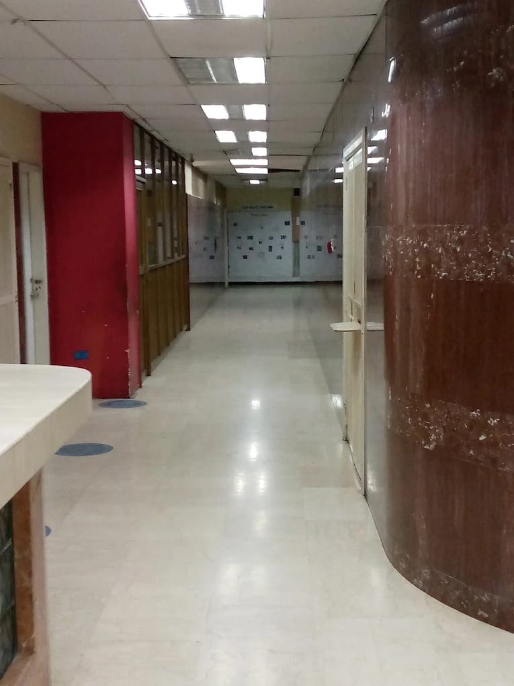

Departamentos
Odio et unde deleniti. Deserunt numquam exercitationem. Officiis quo odio sint voluptas consequatur ut a odio voluptatem. Sit dolorum debitis veritatis natus dolores. Quasi ratione sint. Sit quaerat ipsum dolorem.
Áreas Asistenciales
Conjunto de servicios y unidades destinados a la atención médica y materno-infantil de la población, integrando consultas, hospitalización y atención de guardia.
Consultas Externas
Atención ambulatoria especializada en salud materna y ginecológica.
Hospitalización
Camas y unidades para el ingreso y seguimiento de pacientes.
Servicios de Guardia
Atención continua las 24 horas para casos urgentes.
Unidad de Cuidados
Monitorización especializada para pacientes críticos.

Enfermería
Área fundamental para la atención y el cuidado integral de los pacientes durante su permanencia en la institución, con profesionales especializados en salud materna y neonatal.
Cuidados de parto
Acompañamiento durante el proceso de parto y el inmediato posparto.
Cuidado neonatal
Atención especializada a recién nacidos en sus primeras horas de vida.
Educación sanitaria
Programas de educación en salud para pacientes y familiares.
Coordinación de equipos
Organización y supervisión del trabajo interdisciplinario.
Emergencia y Medicina Crítica
Áreas orientadas a la atención de situaciones que requieren valoración y manejo especializado, disponible las 24 horas del día, todos los días del año.
Atención de urgencias
Valoración y priorización de casos críticos y emergentes.
Medicina crítica
Monitorización y soporte vital en situaciones de alto riesgo.
Estabilización
Intervenciones iniciales para estabilizar al paciente.
Derivación especializada
Coordinación con unidades de alto nivel cuando es necesario.
Áreas Administrativas
Áreas encargadas de apoyar la gestión institucional, administrativa y operativa de la Maternidad, asegurando el correcto funcionamiento de todos los servicios.
Gestión hospitalaria
Coordinación y supervisión de las operaciones institucionales.
Recursos humanos
Gestión del talento humano y desarrollo profesional.
Logística
Abastecimiento y distribución de insumos y materiales.
Finanzas
Gestión contable y financiera de la institución.
Docencia y Formación
Espacio destinado a la formación de profesionales y al desarrollo de actividades académicas vinculadas con las ciencias de la salud, en convenio con instituciones educativas y de posgrado.
Programas de residencia
Formación especializada en ginecología, obstetricia y neonatología.
Cursos de actualización
Programas continuos de actualización en salud materna y neonatal.
Educación continua
Jornadas y seminarios para el desarrollo profesional del personal.
Rotaciones clínicas
Prácticas supervisadas en unidades asistenciales especializadas.
Áreas y departamentos
La estructura que hace posible nuestra atención
Áreas Asistenciales
Conjunto de servicios y unidades destinados a la atención médica y materno-infantil de la población.
Conocer más
Enfermería
Área fundamental para la atención y el cuidado integral de los pacientes durante su permanencia en la institución.
Conocer másEmergencia y Medicina Crítica
Áreas orientadas a la atención de situaciones que requieren valoración y manejo especializado, disponible las 24 horas.
Conocer más
Áreas Administrativas
Áreas encargadas de apoyar la gestión institucional, administrativa y operativa de la Maternidad.
Conocer más
Docencia y Formación
Espacio destinado a la formación de profesionales y al desarrollo de actividades académicas vinculadas con las ciencias de la salud.
Conocer másInvestigación Científica
Área vinculada con el desarrollo de actividades de investigación y generación de conocimientos en el ámbito de la salud materno-infantil.
Conocer más